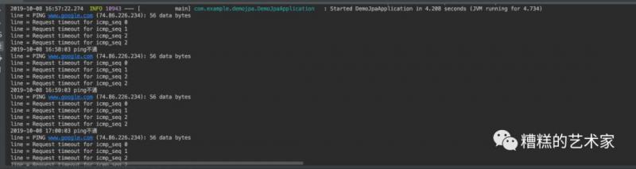
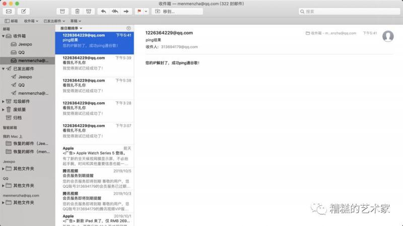

国庆期间，据说是为了防止有人在重大节日发表不正当言论，很多可以kxsw的ip都被封了，可是什么时候才会解封呢，不能没事就去ping一下吧，所以我写了个定时任务，定时ping谷歌服务器，如果ping通则发邮件通知，来看看是怎么做的吧！
首先保证你的电脑之前是可以访问谷歌的（shadowsocks），这个类是专门用来ping谷歌的，相当于手动输入ping www.google.com。
import java.io.BufferedReader;
import java.io.IOException;
import java.io.InputStreamReader;
/**
* @author: zp
* @Date: 2019-10-08 11:31
* @Description:
*/
public class PingUtils {
public static boolean ping02(String ipAddress){
// 读取的行信息
String line =line = null;
// 相当于cmd服务
Process exec = null;
// ping 的结果
boolean res = true;
try {
exec = Runtime.getRuntime().exec("ping " + ipAddress);
BufferedReader br = new BufferedReader(new InputStreamReader(exec.getInputStream()));
// 最多执行三秒
long endTime = System.currentTimeMillis()+3000;
// 测试输出行中是否有ttl字符串，有就说明ping通了
while ((res=true)==true&&(line = br.readLine()).indexOf("ttl")<0){
System.out.println("line = " + line);
res = false;
// 三秒还是ping不通则放弃尝试
if(System.currentTimeMillis()>endTime){
break;
}
}
System.out.println("line = " + line);
} catch (IOException e) {
e.printStackTrace();
} finally {
exec.destroy();
return res;
}
}
}
发送邮件首先需要引入两个jar包：
<dependency>
<groupId>javax.mail</groupId>
<artifactId>javax.mail-api</artifactId>
<version>1.6.2</version>
</dependency>
<dependency>
<groupId>com.sun.mail</groupId>
<artifactId>javax.mail</artifactId>
<version>1.6.2</version>
</dependency>compile group: 'javax.mail', name: 'javax.mail-api', version: '1.6.2'
compile group: 'com.sun.mail', name: 'javax.mail', version: '1.6.2'值得注意的是：邮箱密码是 QQ邮箱开通的stmp服务后得到的客户端授权码！！！类似于sjhabsjhdabasf这种字串。
import javax.mail.Message;
import javax.mail.MessagingException;
import javax.mail.Session;
import javax.mail.Transport;
import javax.mail.internet.AddressException;
import javax.mail.internet.InternetAddress;
import javax.mail.internet.MimeMessage;
import java.util.Properties;
/**
* @author: zp
* @Date: 2019-10-08 14:13
* @Description:
*/
public class MailUtils {
public static void sendQQMail() throws AddressException, MessagingException {
Properties properties = new Properties();
// 连接协议
properties.put("mail.transport.protocol", "smtp");
// 主机名
properties.put("mail.smtp.host", "smtp.qq.com");
// 端口号
properties.put("mail.smtp.port", 465);
properties.put("mail.smtp.auth", "true");
// 设置是否使用ssl安全连接 ---一般都使用
properties.put("mail.smtp.ssl.enable", "true");
// 设置是否显示debug信息 true 会在控制台显示相关信息
properties.put("mail.debug", "true");
// 得到回话对象
Session session = Session.getInstance(properties);
// 获取邮件对象
Message message = new MimeMessage(session);
// 设置发件人邮箱地址
message.setFrom(new InternetAddress("1226364229@qq.com"));
// 设置收件人邮箱地址，可以有多个收件人
message.setRecipients(Message.RecipientType.TO, new InternetAddress[]{new InternetAddress("313694179@qq.com")});
// 设置邮件标题
message.setSubject("ping结果");
// 设置邮件内容
message.setText("您的IP解封了，成功ping通谷歌！");
// 得到邮差对象
Transport transport = session.getTransport();
// 连接自己的邮箱账户，密码为QQ邮箱开通的stmp服务后得到的客户端授权码！！！
transport.connect("1226364229@qq.com", "**********");
// 发送邮件
transport.sendMessage(message, message.getAllRecipients());
transport.close();
}
}这个类采用的是基于SchedulingConfigurer接口的，在ping通后，会修改cron表达式的值，防止重复发送邮件。（之前一分钟测一次，现在一天测一次）
import com.example.demojpa.utils.MailUtils;
import com.example.demojpa.utils.PingUtils;
import org.springframework.context.annotation.Configuration;
import org.springframework.scheduling.annotation.EnableScheduling;
import org.springframework.scheduling.annotation.SchedulingConfigurer;
import org.springframework.scheduling.config.ScheduledTaskRegistrar;
import java.text.DateFormat;
import java.text.SimpleDateFormat;
import java.util.Date;
/**
* @author: zp
* @Date: 2019-10-08 16:22:20
* @Description:
*/
@Configuration
@EnableScheduling
public class TaskBasedInterface implements SchedulingConfigurer {
/**
* 每小时执行一次
*/
private static String cron = "0 */1 * * * ?";
@Override
public void configureTasks(ScheduledTaskRegistrar taskRegistrar) {
taskRegistrar.addCronTask(()-> {
// 测试连接
boolean connected = PingUtils.ping02("www.google.com");
if(connected){
try {
// 修改cron表达式，每天凌晨执行给我发邮件
cron = "0 0 0 * * ? *";
MailUtils.sendQQMail();
log("已成功ping通！");
return;
} catch (Exception e) {
e.printStackTrace();
}
}
log("ping不通");
},cron);
}
public static void log(String message) {
DateFormat df = new SimpleDateFormat("YYYY-MM-dd HH:mm:ss");
String date = df.format(new Date(System.currentTimeMillis()));
System.out.println(date + " "+message);
}
}


能用已有的知识来做一些有趣的事真的能提高你对技术的兴趣呀，反正我是体会到了。
如果觉得有用就关注我吧～